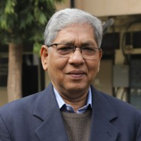

Prof. Mukesh Khare
Professor Mukesh Khare is a Fellow of the Institution of Engineers India and Fellow of the Wessex Institute of Great Britain. He is a Chartered Engineer and obtained his Ph.D. in the Faculty of Engineering from Newcastle University, UK.
With a specialization in air-quality modelling, his experience spans research and development studies, teaching, consulting, modelling, and editorial activities. He has authored more than 200 research publications and serves on national-level policy and advisory bodies, including the High Level Task Force at the Prime Minister's Office.